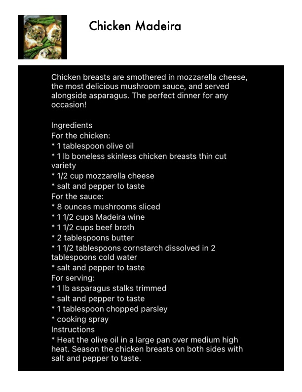

Chicken Madeira

Original cookbook page 222
Ingredients
- For the chicken:
- * 1 tablespoon olive oil
- *1 lb boneless skinless chicken breasts thin c'
- variety
- * 1/2 cup mozzarella cheese
- * salt and pepper to taste
- For the sauce:
- * 8 ounces mushrooms sliced
- * 11/2 cups Madeira wine
- *11/2 cups beef broth
- * 2 tablespoons butter
- * 11/2 tablespoons cornstarch dissolved in 2
- tablespoons cold water
- * 1 lb asparagus stalks trimmed
- * 1 tablespoon chopped parsley
- * cooking spray
Instructions
- * Heat the olive oil in a large pan over medium heat. Season the chicken breasts on both side salt and pepper to taste.
Recipe #222 from collection